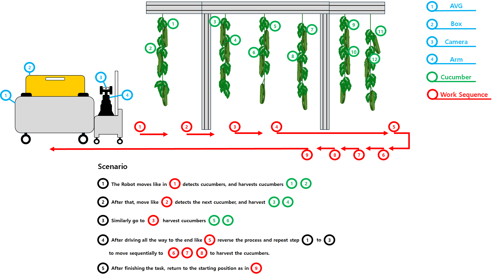
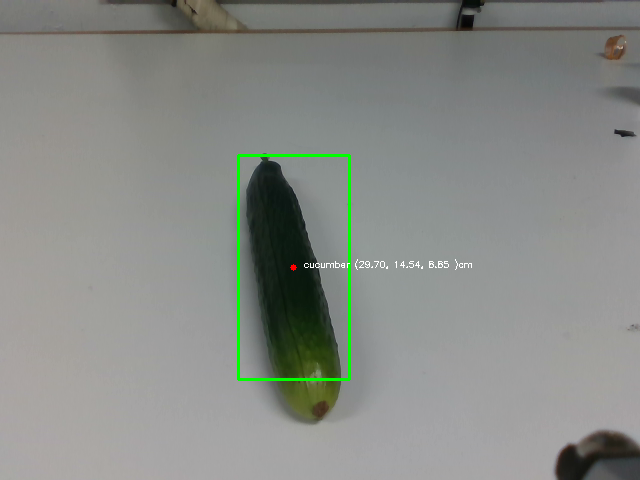

🎉 Autonomus harvesting using Object Detecion#
Detecting cucumbers and we generate specific actions for two types of robots: the ViperX 300s arm robot and an Automated Guided Vehicle (AGV) robot.

Cucumber harvesting using Object Detecion#
The development of a cucumber harvesting
system that utilizes custom object detection with YOLOv11. After
detecting cucumbers, we generate specific actions for two types of
robots: the ViperX 300s arm robot and an Automated Guided Vehicle
(AGV) robot.
The primary aim of this project is to create a comprehensive dataset
that captures both the actions performed by the robots and the images
taken during the harvesting process. This dataset is a crucial resource
for developing and refining algorithms that will enhance future robotic
harvesting techniques.
By systematically recording a wide array of interactions and scenarios, we not only improve the efficiency of current systems but also lay a robust foundation for future advancements in agricultural robotics. This initiative represents a significant step forward in automating and optimizing the harvesting process through the integration of advanced machine learning models and robotic technology.
🛠️ Prerequisites#
Ubuntu 20.04 🐧
Interbotix Packages 🤖
Python 🐍
ROS 🤖
interbotix_ws : -
🚀 Installation#
To get started with this frame work, follow these steps:
git clone https://github.com/sainavaneet/Harvesting.git
cd Harvesting/
pip install -e .
🗂 Project Structure#
├── base_control
│ ├── agv_control.py
│ ├── examples
│ │ ├── move_6s_back.py
│ │ ├── move_6s_forward.py
│ │ ├── move_base.py
│ │ ├── odom_cal.py
│ │ └── original.py
│ ├── gui_control.py
│ └── __pycache__
│ └── agv_control.cpython-38.pyc
├── config
│ └── vx300s.yaml
├── harvest.py
├── images
│ └── obj_detection.png
├── index.md
├── __init__.py
├── launch
│ └── robot.launch
├── object_detection
│ ├── dataset
│ │ └── Cucumber.v2i.yolov11.zip
│ ├── detection_realsenes.py
│ └── weights
│ ├── best.pt
│ └── last.pt
├── __pycache__
│ └── var.cpython-38.pyc
├── README.md
├── requirements.txt
├── robot_utils.py
├── rviz
│ ├── puppet_left.rviz
│ └── rviz.rviz
├── setup.py
├── sleep.py
├── transform_co.py
├── utilities.py
├── var.py
└── videos
├── 1.mp4
├── 2.mp4
├── 3.mp4
└── 4.mp4
Launch#
source interbotix_ws/devel.setup.bash
cd ~/Harvesting/launch/
roslaunch robot.launch use_rviz:=false use_sim:=False # if you need in simulation use True
Object Detection#
The object detection files are located in the /object_detection
directory.
By executing the detection_realsense.py script, cucumbers can be
detected. We have designed the algorithm in such a way that it
determines a stable pose of the cucumber after detecting it, based on a
predefined threshold.

🦾TASK#
Robot Movement: The robot starts at position 1, moves along the path, detects cucumbers, and harvests them.Detection and Harvesting:After harvesting cucumbers at position 1, the robot moves to position 2, detects the next cucumber, and proceeds with harvesting. This pattern continues as the robot moves along the track.Sequential Harvesting:The robot moves sequentially from positions 1 to 4, harvesting cucumbers at each point along the way.Reversal of Process:Once the robot reaches the end of the track, at position 5, it reverses the process and moves back along the same path, harvesting cucumbers from position 6 to 3.Return to Start:After completing the harvesting task, the robot returns to its starting position at 9.

The entire task can be executed using the Python script.
python harvest.py
🎁 Dataset#
Dataset can be found in the releases.